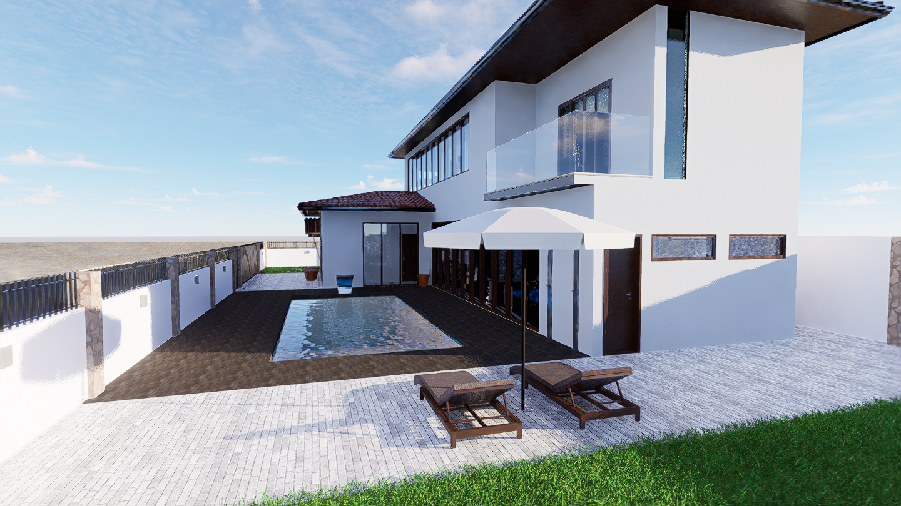
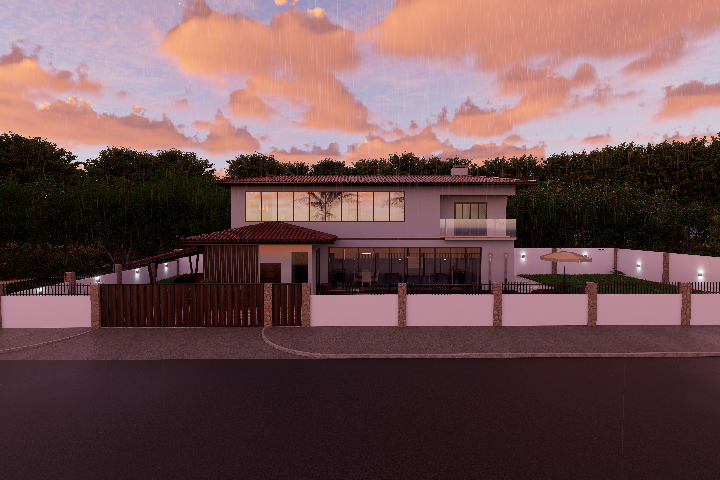
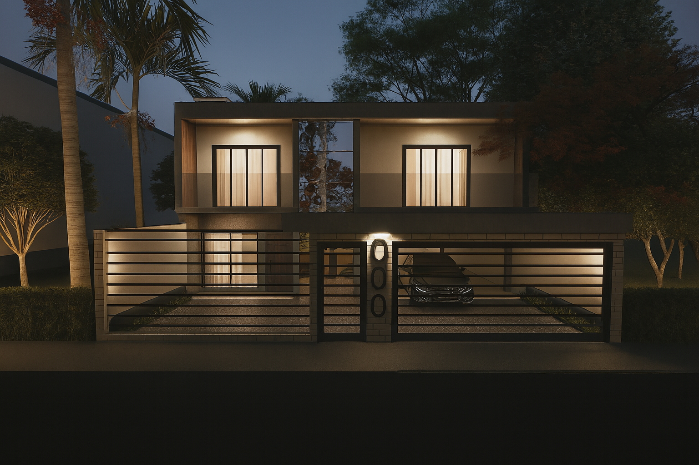

Engenharia técnica com precisão, responsabilidade e método.
Atuação completa em projetos e apoio técnico à engenharia,
com documentação organizada e padrão profissional.
Ferramentas
Revit • TQS • Render • Excel • Documentação técnica
Atuação técnica
Apoio a engenheiros, arquitetos, trabalhadores da construção civil
e profissionais do mercado imobiliário.
Projetos CAIXA
Desenvolvimento de projetos para financiamento habitacional
junto à CAIXA Econômica Federal.
Região
Encruzilhada do Sul / RS
Projetos executados
- Projeto arquitetônico
- Projeto estrutural
- Projeto elétrico
- Projeto hidrossanitário
- Projeto legal / prefeitura
- Projetos habitacionais (CAIXA)
- Compatibilização de projetos
- Orçamentos, quantitativos e medições
- Vistorias técnicas e relatórios
- Outros projetos compatíveis com a área
Forma de trabalho
- Levantamento técnico e briefing
- Análise normativa
- Desenvolvimento técnico
- Compatibilização entre disciplinas
- Entrega clara e documentada
Portfólio

Projeto arquitetônico
Desenvolvimento técnico.

Compatibilização
Integração de disciplinas.

Renderização
Apresentação realista.
Área de atendimento
Encruzilhada do Sul/RS e municípios da região.
Contato
📧 murilocosta.edificacoes@gmail.com
📱 WhatsApp: (51) 99931-2787
📸 Instagram: @murilocostaedificacoes